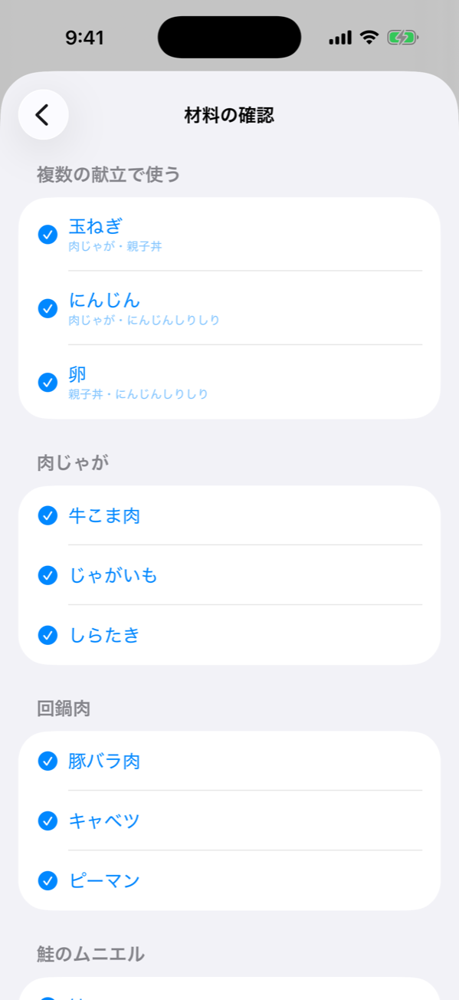
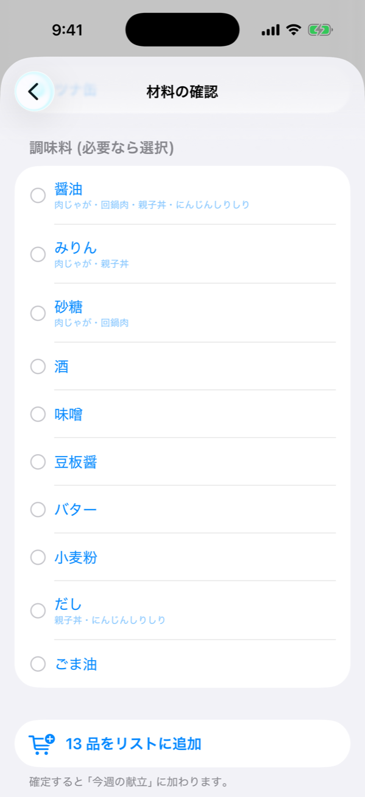
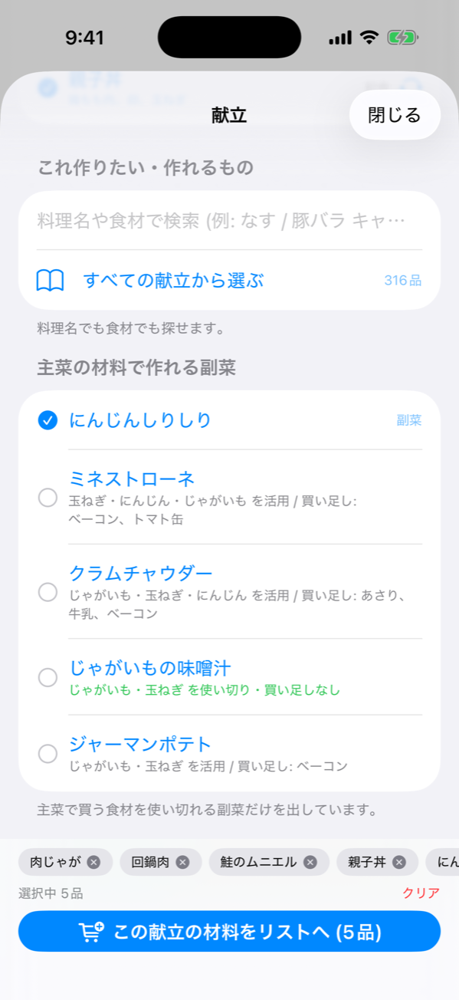
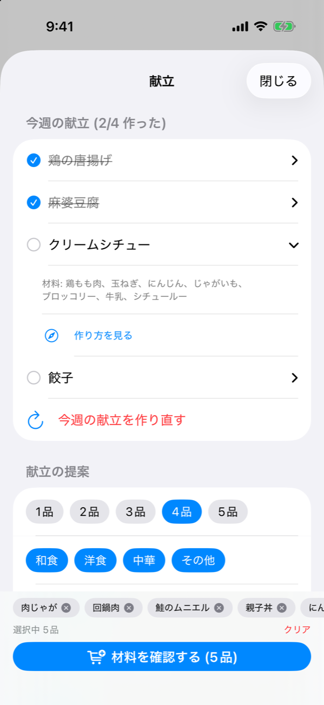
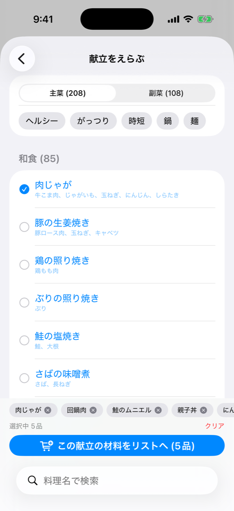
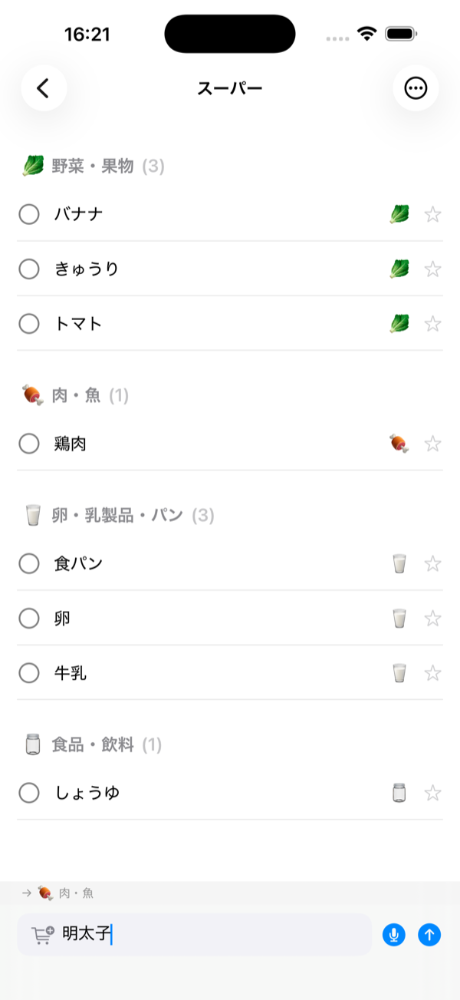
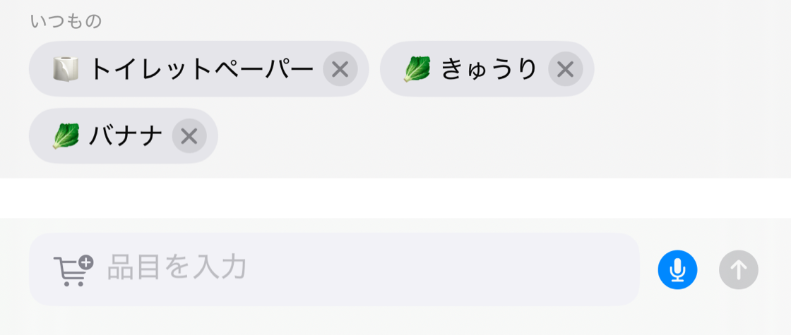
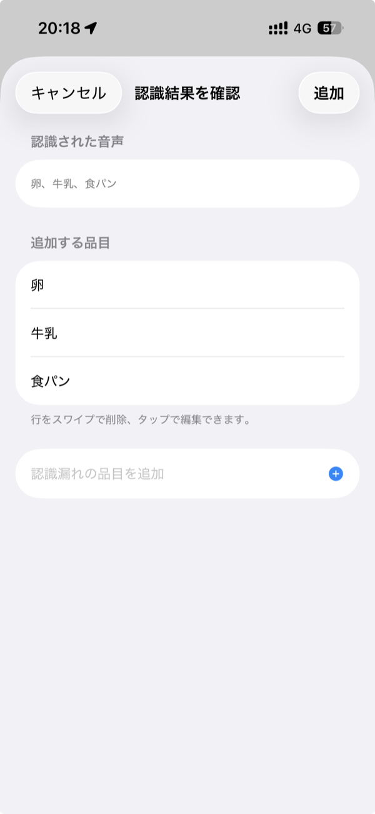
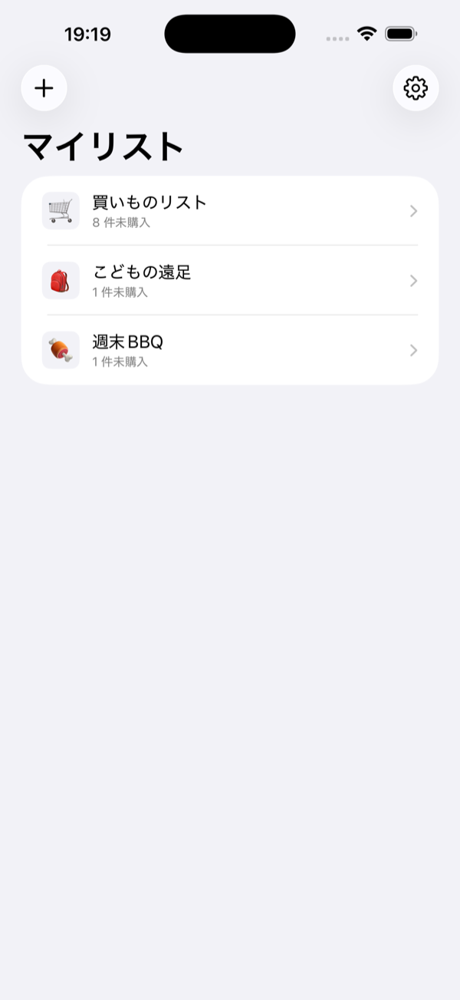

今夜なに作ろう、から始めない
01「4 品」と決めるだけで、和食・洋食・中華をまぜて献立を提案します。気に入らない一品は、その場で差し替え。
決まったら、材料はまとめて買い物リストへ。玉ねぎもにんじんも、複数の献立で使うものは 1 行にまとまり、家にある調味料は入りません。


主菜で買う食材から、副菜も。「玉ねぎとにんじんを活用、買い足しはベーコンだけ」— 使い切れる組み合わせだけを出します。作ったら、チェック。作り忘れは「過去の献立」から戻せます。


350 品以上の献立を内蔵。作り方は、レシピサイトの検索結果へ 1 タップで飛べます。

きょうの、かご。
02ある家族の一日を、リストでたどってみます。
- 7:20
冷蔵庫の前で「牛乳がない」。その場で、リストに追加。
- 12:00
昼休みにひらいた家族のリストにも、同じ「牛乳」が並んでいる。言わなくても、伝わっている。
- 18:10
スーパーで開くと、リストは売り場の順に並んでいる。行ったり来たりせず、上から辿るだけ。
- 18:24
牛乳、買えた。チェックひとつで、ふたりのリストから消える。
1 つのリストで、食材も日用品も
03「小松菜」も「めんつゆ」も、洗剤やトイレットペーパーも。リストを分けなくても、スーパーの売り場順にちゃんと並びます。日本の買い物に並ぶ 1500 以上の品目を 7 つの売り場カテゴリへ自動で分類。並び順は、よく行くお店の動線に合わせて変えられます。

あなたの「いつも」を覚えます
04買う時間・曜日・買い直す周期の 3 つで学習。「そろそろ砂糖が切れる頃」まで先回りして、ワンタップで再登録できます。よく買うものほど、入力はゼロに近づいていきます。

— 明日の「いつもの」は、もう覚えています。
話すだけで、リストになる
05「牛乳と卵と食パン」— まとめて話せば、Apple Intelligence が 3 つの品目に分けて追加します。認識も分解も、すべて iPhone の中で完結。台所で手が塞がっていても、リストは進みます。

家族と、同じかごを持つ
06リストは、個人用・家族用・職場用と、いくつでも使い分けられます。共有したいリストだけ、リンクをひとつ送れば家族のものに。誰かが買えば、みんなのリストから消える。「あれ買った?」の往復が、静かになくなります。

iCloud で同期します。アカウント登録は必要ありません。
よくある買い物リストと、ちがうところ
07-
カテゴリ分けも並べ替えも、自分の手で
書くだけで、売り場の順に自動で並ぶ
-
「牛乳」を毎週、また打ち込む
「いつもの」が覚えていて、ワンタップで戻る
-
海外製アプリは、小松菜もめんつゆも知らない
日本の買い物に合わせた、1500 以上の辞書
-
家族と共有するには、アカウント登録から
iCloud だけ。リンクひとつで共有できる
Kago が持たないもの
08買い物リストは、道具です。静かであるほど、よく働きます。
- アカウント登録iCloud があれば、それだけで始まります。
- 広告リストの間に、何も挟みません。
- ポイントやクーポン買い物リストは、買い物リストのままで。